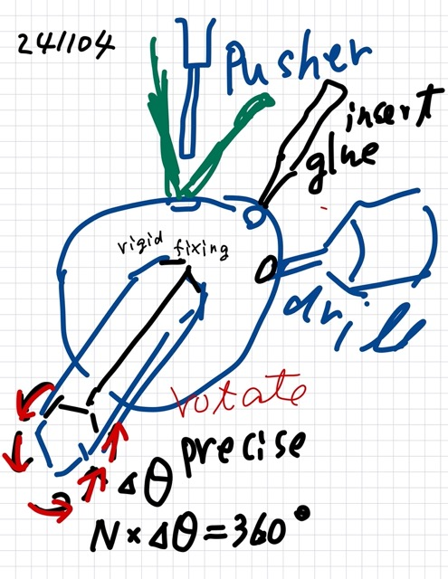
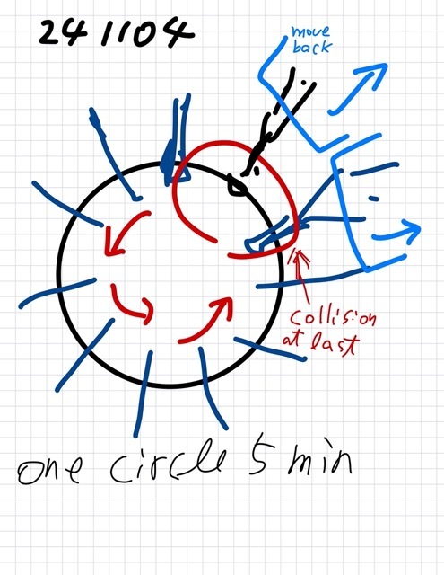

ブラシのボールへの取り付け作業効率化¶
{241104}, {241109}
目的と目標¶
ボールの円周に、ブラシを N 本取り付ける。
できるだけ、短時間に、多くの数を制作する
ボールの円周、ぐるっと、ひと周り作業して作るまでに、５分ないしは、できればできれば３分で完成できるように、工作方法（制作方法）を工夫する
考え方¶

ボールの円周に、ブラシを N 本取り付ける。そのために、ブラシを取り付ける作業を、N回ボールを少しづつ回転させて、ブラシを差し込んで、固定していく。
- 作業（ブラシを取り付ける）として３つの種類がある。
細い穴を開ける（その穴に、ブラシの棒を差し込む）
接着剤を、細い穴に、注ぎ込む
ブラシを、押出棒で押し込める一に、セットする
押出棒（push rod）でブラシを、細い穴に押し込む
- ボールの円周をひととおり、一回だけ回転させるだけで、完成するように工夫する。
それにより、一つの円周への取り付けが、早くできる。
作業（３つの種類）を、 回転角度のステップを３回動かすことで、切り替えて、実施する。
ステッピングモータで駆動するように工作するが、その前に、手動で作業がうまくいくかどうかを、確認する。
さいごのブラシを取り付けるまで回転して来た場合は、さいごに、①ドリル、②接着剤挿入、のジグ（工作機械）を 後ろに倒して 、すでに取り付けられているブラシの軸と干渉しないように（ぶつかって回転が止まらないように）する
{kind=link}
注意事項¶
（工作機械を発注する場合に注意すること）

ボールと回転軸とは、ガタが発生して、角度方向にズレが発生しないように、ボールに棒を差し込んだ際にしっかり固定できるように工夫する
軸の回転は軸のステッピング・モータで、正確に、N回のステップで 360度、一回転して、もとに戻るようにする。
- 細孔の位置が、N回ステップの回転の間、正確に同じ位置に来るように、回転軸の回転回転（360度/N）の精度を高める
ステッピング・モータを使えばよいのでは（提案）
ドリル①と、接着剤の挿入②とは、は、装置（ジグ）を後ろに倒す機構をつける。ただし、ただし、しっかりした、重量のある滑り面を用意して、元の位置にもどったときに位置がずれないように工夫する。
{kind=link}
Let me know if you need further clarification!
Let me know if you need further clarification!